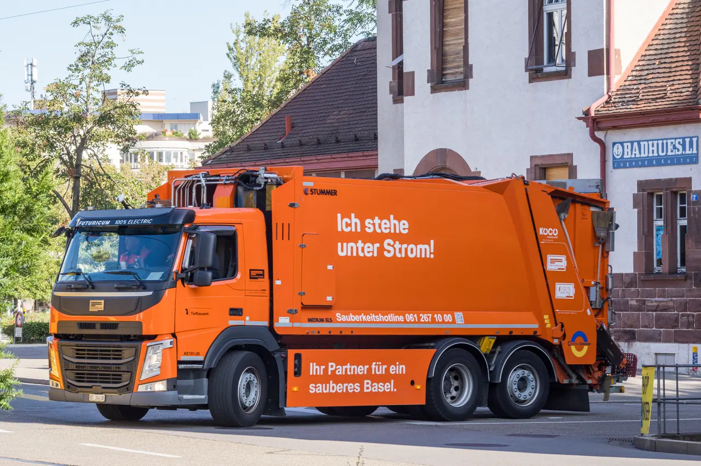

▲ 상용차 섀시에 배터리를 얹어 전기를 실어 나르는 방식이다 ⓒ Wikimedia Commons
전기트럭 이야기는 대개 '무엇을 얼마나 싣고 얼마나 가느냐'로 흘러갑니다.
이번 건은 방향이 반대입니다. 짐을 나르는 것이 아니라 전기 자체를 나르는 차입니다.
1. 이동형 ESS가 무엇인가
ESS는 에너지저장장치입니다. 보통은 건물이나 발전소 옆에 고정 설치합니다. 전기를 저장해 두었다가 필요할 때 씁니다.
이동형 ESS는 이 장치를 차에 얹은 것입니다. 전기가 필요한 곳으로 배터리를 직접 가져갑니다.
📍 발전기와 무엇이 다른가
기존에는 전기가 없는 곳에 디젤 발전기를 가져갔습니다. 연료를 태워 그 자리에서 전기를 만듭니다. 소음과 배기가 나오고 연료 보급이 필요합니다.
이동형 ESS는 이미 충전된 전기를 실어 옵니다. 소음과 배기가 없고 즉시 쓸 수 있습니다. 대신 다 쓰면 돌아와 충전해야 합니다.
2. 첫 시제차 — 기센 4륜구동에 220kWh
공개된 첫 시제차는 타타대우의 2.5톤 전기트럭 기센(GIXEN)을 기반으로 합니다.
| 항목 | 내용 |
|---|---|
| 기반 차량 | 2.5톤 전기트럭 기센 |
| 구동 | 4륜구동 |
| 배터리 | 220kWh |
| 용도 | 군용 사양 |
| 공개 | 8월 25일 EV 트렌드 코리아 2026 |
4륜구동인 이유는 분명합니다. 포장도로가 없는 곳까지 들어가야 하기 때문입니다.

▲ 4륜구동은 비포장 야전 진입을 전제로 한 선택이다 ⓒ Wikimedia Commons
3. 세 갈래 시장
개발이 겨냥하는 시장은 세 갈래입니다.
| 구분 | 내용 |
|---|---|
| 군수 | 야전 작전 — 전력 인프라가 없는 지형에서 이동형 전원 |
| 민수 | 건설현장 · 산업시설 · 재난지역 |
| 수출 | 중동 · 동남아 · 아프리카 — 전력 인프라 공백 지역 |

▲ 전력 인프라가 없는 지역으로 배터리를 직접 실어 나른다 ⓒ Wikimedia Commons
📍 재난지역이 핵심 용처입니다
정전이 발생하면 고정 설비를 새로 짓는 것은 불가능합니다. 시간이 없기 때문입니다.
이동형 ESS는 도로만 열려 있으면 당일 투입이 가능합니다. 임시 의료시설이나 대피소 전원처럼 짧고 급한 수요에 맞습니다.
4. 다음 단계
타타대우는 민수 시장용으로 2.5톤과 5톤 사양을 추가할 계획입니다. 방산 계약과 수출 전략도 함께 준비 중입니다.
✅ 공개된 향후 계획
· 민수용 2.5톤·5톤 사양 추가
· 방산 계약 추진
· 수출 전략 수립 — 중동·동남아·아프리카
타타대우 대표는 "미래 상용차 시장은 단순히 화물을 옮기는 것에서 필요한 곳에 에너지를 공급하는 영역으로 확장된다"고 밝혔습니다.

▲ 민수용은 2.5톤과 5톤으로 확대할 계획이다 ⓒ Wikimedia Commons
5. 아직 확인되지 않은 것
양산 시점과 가격은 공개되지 않았습니다. 이번 발표는 MOU 체결과 시제차 공개 단계입니다.
220kWh를 실제 현장에서 몇 시간 동안 얼마의 부하에 쓸 수 있는지, 충전에 얼마가 걸리는지도 함께 나오지 않았습니다. 실사용 성능은 이 수치들이 나와야 판단할 수 있습니다.
정리
타타대우모빌리티가 이온어스와 상용차 기반 이동형 ESS 공동개발 MOU를 맺었습니다. 첫 시제차는 2.5톤 전기트럭 기센 4륜구동에 220kWh 배터리를 얹은 군용 사양으로, 8월 25일 EV 트렌드 코리아에서 공개됐습니다.
디젤 발전기와 달리 이미 충전된 전기를 실어 나르는 방식이라 소음·배기가 없고 즉시 사용할 수 있습니다. 군 야전, 건설현장·산업시설·재난지역, 그리고 전력 인프라가 부족한 중동·동남아·아프리카를 노립니다.
민수용 2.5톤·5톤 확대와 방산 계약, 수출 전략이 다음 단계입니다. 다만 양산 시점·가격·실사용 지속시간은 아직 공개되지 않았습니다.